シャキシャキ玉ねぎと旬のきのこのサラダ。ジェノベーゼ風に仕立て、パルミジャーノを山盛りかけました！チーズとよく混ぜてどうぞ！バジルの香りとよく合う[白]ソーヴィニヨン・ブランと好相性！

旬のマスカットと巨峰をちりばめた、透き通るゼリーのテリーヌです。巨峰のドリンクとともにどうぞ！
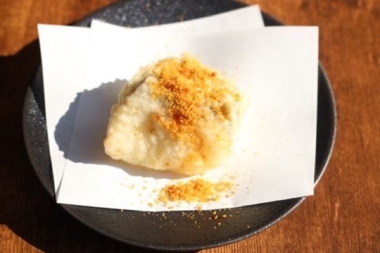

脂ののった秋刀魚の皮目を香ばしく炙りました。薬味と合わせてさっぱりとどうぞ！[白]甲州と好相性！

脂ののった戻り鰹を香ばしく炙りました。薬味をたっぷりのせてどうぞ！[白]甲州と好相性！

ひんやり甘い冷凍いちじくとモッツァレラを生ハムとともに。スパークリングとどうぞ！

旬の秋刀魚にトマトと玉ねぎを合わせた爽やかなマリネ。[白]ソーヴィニヨン・ブランと好相性！

脂ののった秋刀魚を大葉で巻いて揚げました。爽やかな梅肉とともに。そのままでどうぞ！[白]甲州と好相性！

揚げて甘みの増したいちじくに、ゴルゴンゾーラがとろけます。バルサミコソースとともに。そのままでどうぞ！[赤]マスカット・ベーリーＡと好相性！
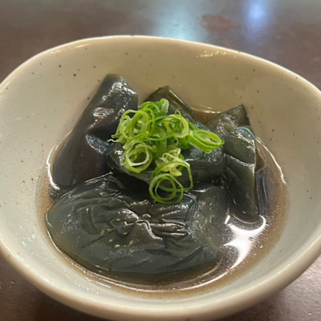
とろりと揚がった茄子に、旨みをじんわり含ませました。箸休めの一皿に！

マスカットの甘みとチーズのコクを、生ハムの塩気で包み込んだ逸品！スパークリングと好相性！

鯛の上品な甘みに、昆布の旨みを重ねました。まずはそのままお楽しみください！[白]甲州と好相性！

市場から仕入れた鮮魚三種を楽しめる贅沢な盛り合わせ。
日本の[白]甲州がおすすめ！

前菜をちょこっとずつ楽しめる小鉢盛り。お好きなお酒とどうぞ！
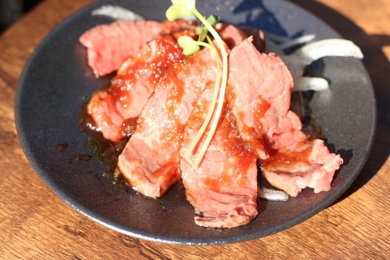
肉の旨みを味わえる自慢のローストビーフです。[赤]ピノ・ノワールと好相性！
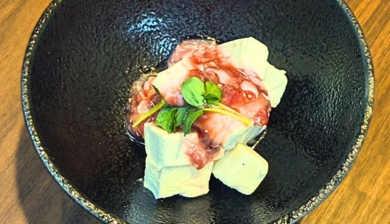
酒盗の濃い旨みを、クリームチーズがまろやかに。お好きなお酒とどうぞ！
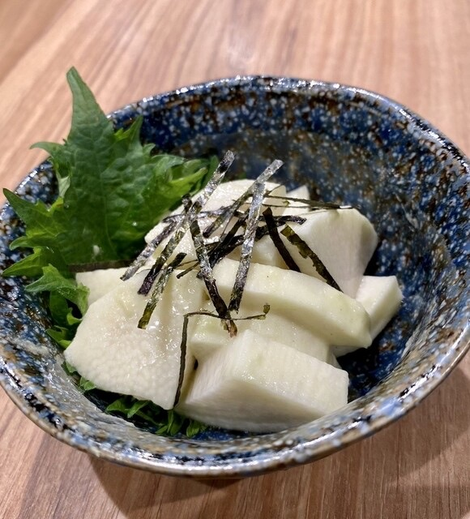
シャキシャキの長芋にわさびがつんと香ります。天ぷらの合間の箸休めに！

やさしい甘みとなめらかな口当たりの自家製ポテサラ。箸休めにもアテにも！

迷ったらコレ！その日のおすすめ天ぷら五種を食べ比べてお楽しみください。天ぷらにはスパークリングを！

大塩の看板娘！ぷちっと弾けるいくらの濃い旨みと海苔天の食感を楽しめます。スパークリングと相性◎

人気の一角。ネギトロとたくあんのぽりぽり食感がベストマッチ。スパークリングと相性◎
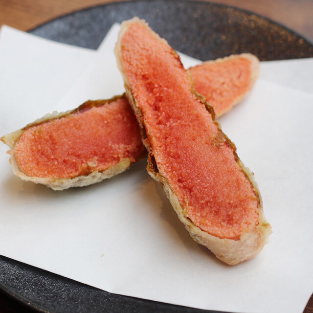
明太子の濃い旨みを衣で包みました。そのままでどうぞ！[白]リースリングと好相性！
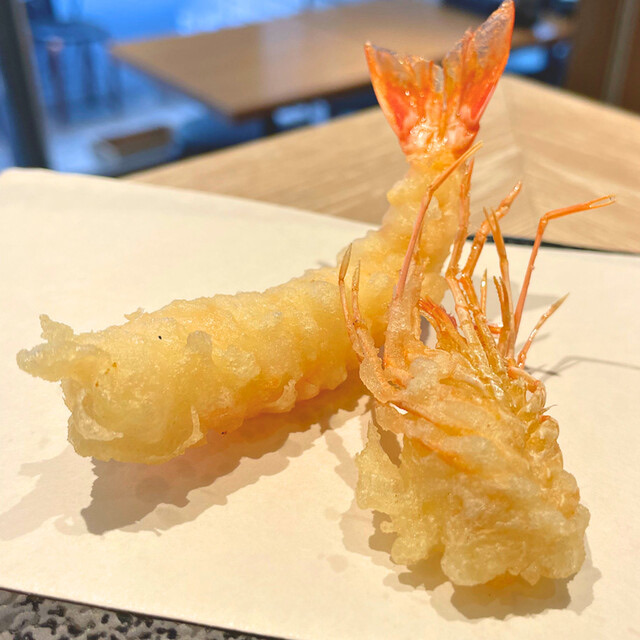
王道！ぷりっとした食感と揚げたての香ばしさをお楽しみください。藻塩をつけてどうぞ！ロゼスパークリングと◎

弾力ある食感とやさしい甘み。塩でも天つゆでも！[白]ヴィオニエと好相性！

真鯛にレモンピールの爽やかな香りがベストマッチ。そのままでどうぞ！ロゼスパークリングと！

香ばしい大葉天に濃厚なウニの旨み。藻塩を少しつけて、贅沢に一口でどうぞ！[白]ヴィオニエと好相性！
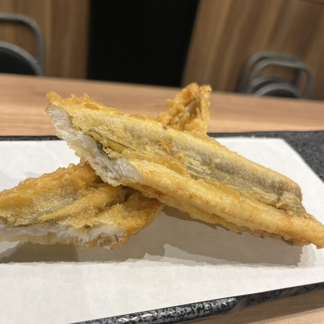
ふっくらした穴子の身と、上品な脂の旨み。藻塩か天つゆでどうぞ！[赤]マスカット・ベーリーＡと好相性！ ※写真は２個分です。

大人気！アスパラにはパルミジャーノ◎そのまま熱いうちにどうぞ！[白]ソーヴィニヨン・ブランと好相性！
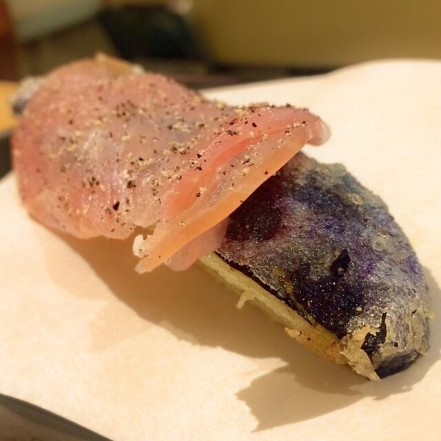
揚げたてのナスには、プロシュートの塩気がベストマッチ。そのまま熱いうちにどうぞ！[赤]ピノ・ノワールと好相性！

とろりと揚がったアボカドにはわさびマヨがベストマッチ。ソースと一緒にどうぞ！[白]シャルドネと好相性！

肉厚のしいたけに、ガーリックの効いたチーズを詰めて揚げました。そのまま熱いうちにどうぞ！[赤]カベルネ・ソーヴィニヨンと好相性！

シャキシャキっとした楽しい歯触りと、香ばしさが◎。塩でも天つゆでも！[赤]カベルネ・ソーヴィニヨンと好相性！
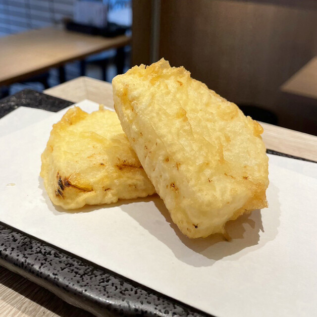
揚げて引き出した玉ねぎの甘みと、とろりとした食感。塩でも天つゆでも！[赤]カベルネ・ソーヴィニヨンと好相性！
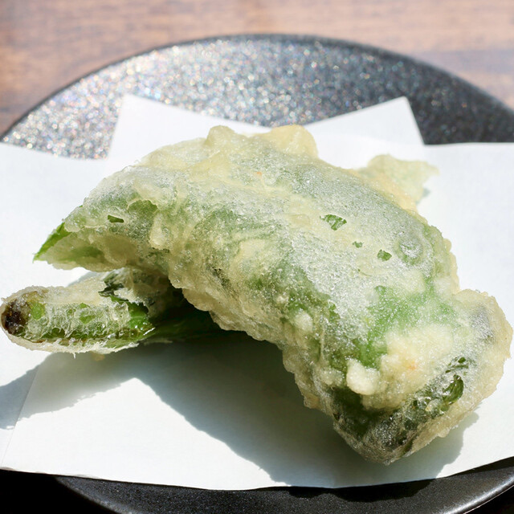
京野菜である万願寺とうがらしはやさしい甘みが特徴。岩塩を少しつけてどうぞ！[白]甲州と好相性！

秋の定番。香り高い舞茸をさくっと揚げました。塩でも天つゆでもおいしく楽しめます！[赤]ピノ・ノワールと好相性！
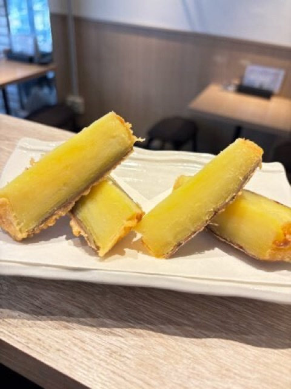
弱火で二時間じっくり揚げ、甘みをじっくり引き出しました。[赤]カベルネ・ソーヴィニヨンと好相性！
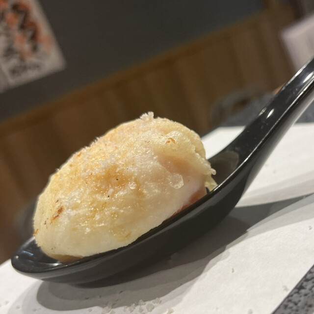
衣の中から半熟の黄身がとろける。天つゆをつけて、熱いうちにどうぞ！[白]シャルドネと好相性！
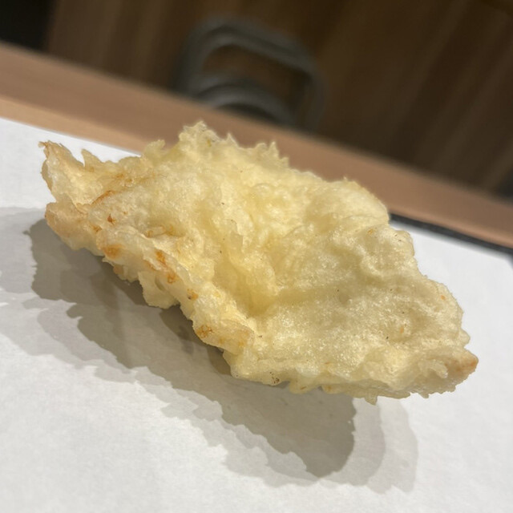
ジューシーな鶏の旨みを香ばしい衣で包みました。天つゆをつけて、熱いうちにどうぞ！[赤]ピノ・ノワールと好相性！

磯の香りが広がる、みんな大好きちくわの磯部。塩でも天つゆでも！[白]ヴィオニエと好相性！
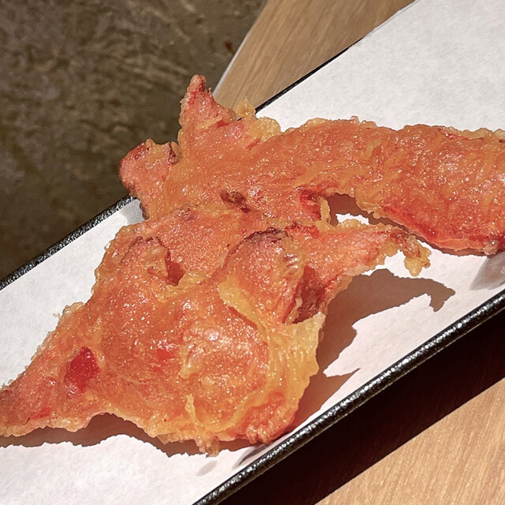
大阪名物！辛みと酸味がくせになる昔ながらの天ぷら。天つゆを少しつけてどうぞ！スパークリングと！

鴨肉の濃い旨みを香ばしい衣で閉じこめました。そのままでどうぞ！[赤]ピノ・ノワールと好相性！

贅沢にカマンベールの天ぷらを香ばしくキャラメリゼ。蜂蜜とともに熱いうちにどうぞ！[白]シャルドネと好相性！
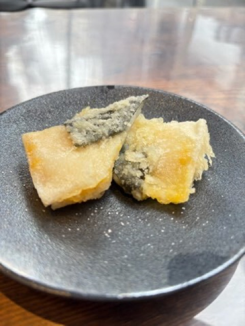
もちもちの餅ととろけるチーズを天ぷらにした食感楽しい変わり種。砂糖醤油をからめてそのままでどうぞ！[白]シャルドネと好相性
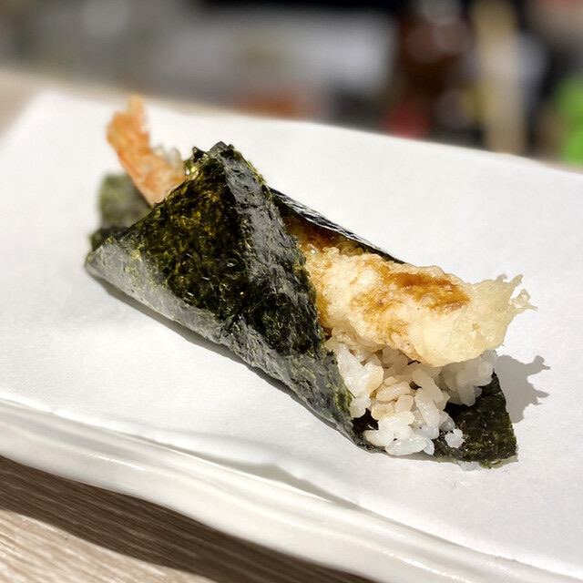
海老天を海苔とごはんで巻いた〆の一品。甘だれが最高に合う！
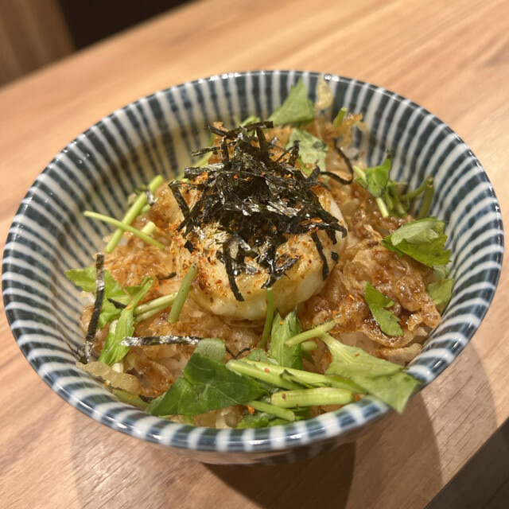
半熟卵天をご飯にのせた〆の丼ぶり。甘だれが染みたご飯に黄身をくずして召し上がれ！

なめらかなバニラアイスに、甘く香るデザートワイン。〆の甘味に！

Sangria White

Draft beer/맥주

Bottled beer (KIRIN)

whisky/위스키

Whisky and Soda/하이볼

Jasmine shochu with jasmine tea

Lemon sour
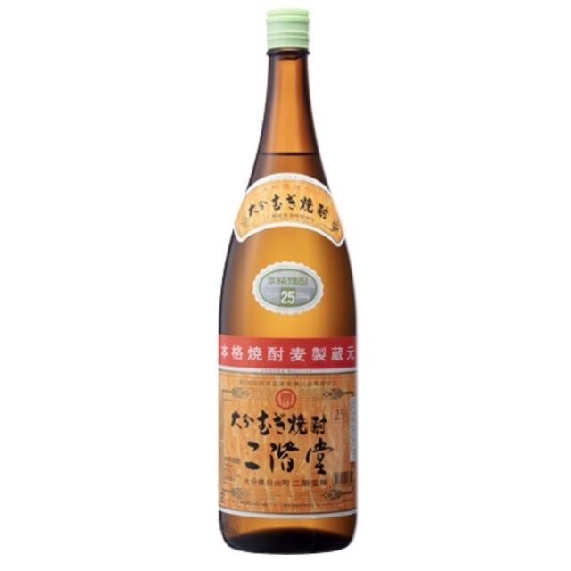
Shochu Barley / 일본 소주 보리
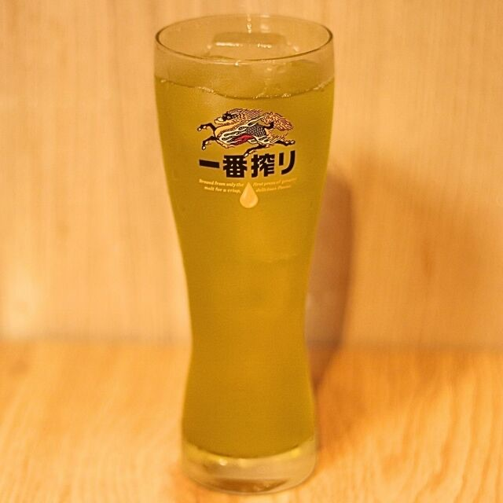
Shochu and Green Tea
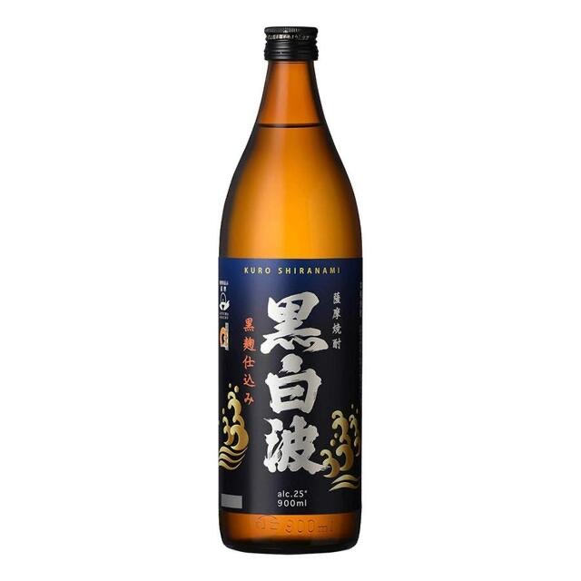
Shochu Sweet potato / 일본 소주 고수마
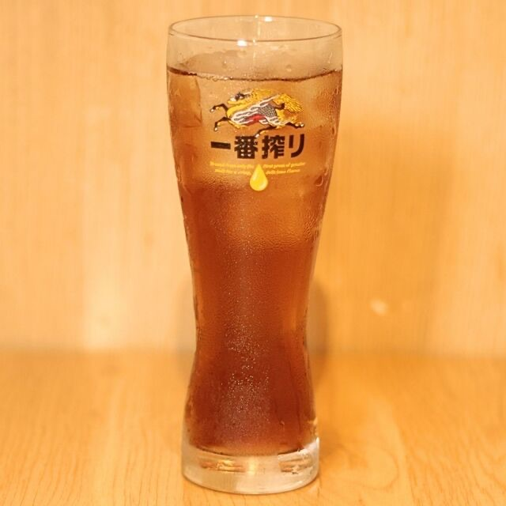
Japanese Spirits with Oolong Tea

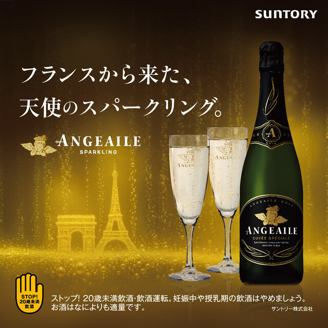
きりっとした辛口で、天ぷらの香ばしさを軽やかに引き立てる泡です（スペイン）。
◎おすすめペアリング: いくらカナッペ、天ぷら全般
Sparkling wine / Glass

きりっとした辛口で、天ぷらの香ばしさを軽やかに引き立てる泡です（スペイン）。
◎おすすめペアリング: いくらカナッペ、天ぷら全般
Sparkling wine / Bottle

塩にも天つゆにも寄り添い、海老や真鯛の味わいを引き立てる万能なロゼです（スペイン）。
◎おすすめペアリング: 海老、真鯛～レモンピール～
Rose Sparkling Wine /Glass

スパークリングワインのおかわりはグラスなみなみにおつぎいたします。
◎おすすめペアリング: いくらカナッペ、天ぷら全般

塩にも天つゆにも寄り添い、海老や真鯛の味わいを引き立てる万能なロゼです（スペイン）。
◎おすすめペアリング: 海老、真鯛～レモンピール～
Bottle of Rose Sparkling wine

ごろっと巨峰を贅沢に。
ロゼ香る、秋だけのスパークリング！

ごろっと巨峰を贅沢に。
旬の果実をまるごと楽しめる秋だけのサングリアです。

【ノンアルコール】ごろっと巨峰を贅沢に。
果肉入りの秋限定ソーダ！

ごろっと巨峰を贅沢に。
果肉入りの秋限定サワー！

Oolong tea/우롱차

Sparkling water/탄산수

Green tea/녹차

Oolong tea (hot)/ 핫 우롱차

grape vinegar soda/포도 소다


きりっとした辛口で、青りんごやトロピカルフルーツが香る白です（チリ）。
◎おすすめペアリング: カマンベールブリュレ、天ぷら全般
Chardonnay / Glass

ハーブの香りと、バランスの取れた豊かな味わいが魅力の白です（フランス）。
◎おすすめペアリング: アスパラ～パルミジャーノ～
Sauvignon Blanc / glass

かんきつ系の爽やかな香りが広がり、和食にすっと寄り添う白です（日本）。
◎おすすめペアリング: 秋刀魚、万願寺、お造り三種盛り
Japanese wine ”ko-shu”.Goes well with tempura.

みずみずしい果実の香りが広がる、やや甘口でやさしい飲み口の白です（ドイツ）。
◎おすすめペアリング: マスカット生ハムチーズ、明太子

フレッシュで生き生きとした酸味と、上品で華やかな香りを楽しめる白です（フランス）。
◎おすすめペアリング: 海老、イカ、魚介類
Viognier/glass

きりっとした辛口で、青りんごやトロピカルフルーツが香る白です（チリ）。
◎おすすめペアリング: カマンベールブリュレ、天ぷら全般
Chardonnay / Bottle

ハーブの香りと、バランスの取れた豊かな味わいが魅力の白です（フランス）。
◎おすすめペアリング: アスパラ～パルミジャーノ～
Sauvignon Blanc / Glass

かんきつ系の爽やかな香りが広がり、和食にすっと寄り添う白です（日本）。
◎おすすめペアリング: 秋刀魚、万願寺、お造り三種盛り
Japanese wine “ok-shu”. Goes well with tempura.

フレッシュで生き生きとした酸味と、上品で華やかな香りを楽しめる白です（フランス）。
◎おすすめペアリング: 海老、イカ、魚介類
Viognier/bottle

みずみずしい果実の香りが広がる、やや甘口でやさしい飲み口の白です（ドイツ）。
◎おすすめペアリング: マスカット生ハムチーズ、明太子

イチゴやチェリーの香りが広がる、軽やかでやさしい飲み口の赤です（チリ）。
◎おすすめペアリング: 鴨、かしわ天、ナス～プロシュート～
Pinot Noir / Glass

カシスの豊かな香りと深いコク、重厚感のある味わいを楽しめる赤です（フランス）。
◎おすすめペアリング: さつまいも、しいたけ～ガーリックチーズ～
Cabernet Sauvignon / Glass

野イチゴのやさしい香りに、ベリーの果実味がふわりと重なるロゼです（日本）。
◎おすすめペアリング: 穴子天

イチゴやチェリーの香りが広がる、軽やかでやさしい飲み口の赤です（チリ）。
◎おすすめペアリング: 鴨、かしわ天、ナス～プロシュート～
Pinot Noir / Bottle

カシスの豊かな香りと深いコク、重厚感のある味わいを楽しめる赤です（フランス）。
◎おすすめペアリング: さつまいも、しいたけ～ガーリックチーズ～
Cabernet Sauvignon / Bottle

野イチゴのやさしい香りに、ベリーの果実味がふわりと重なるロゼです（日本）。
◎おすすめペアリング: 穴子天